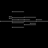

This post is a collection of experiments I have done with audio analysis.
Midi Files
Midi files are unique to other file types. Midi files store what notes are played as well as how long they are played. Midi files, unlike other files, have the unique ability to be converted into images that depict what notes are being played at a given time. This allows for the possibility to train a Machine Learning model on these images to make music. This however is incredibly difficult and is currently a problem I’m experimenting with right now!
So far, I have created an algorithm to read these files and convert them into image files that could be read by a computer. Below are some Midi Files converted into images by some software I wrote:

Audio Imaging
One of my all time favorite math equations is an equation called the Fourier Transform. The Fourier Transform takes in any sound wave and breaks it apart into individual frequencies. This is very useful for audio processing which uses this formula in autotune software for example. For me however, I took a different route and experimented with creating images from these frequencies.
While writing the software for it, I came across an experiment that yielded super interesting results by substituting in trig functions to create our “sound wave” for analysis. This software can draw interesting shapes from these functions. Below is this software implemented right into the website. By changing the variables below, you can draw different shapes.
Web Version:
Typically numbers between 0 and 0.5 produce the best results.
Some of my favorites are:
1. Frequency 1: 0.1, Frequency 2: 0.3, Trig 1: Sin, Trig 2: Sin
2. Frequency 1: 0.2, Frequency 2: 0.1, Trig 1: Sin, Trig 2: Cos
3. Frequency 1: 0.1, Frequency 2: 0.1, Trig 1: Tan, Trig 2: Tan
4. Frequency 1: 0.1, Frequency 2: 0.05, Trig 1: Sin, Trig 2: Sin